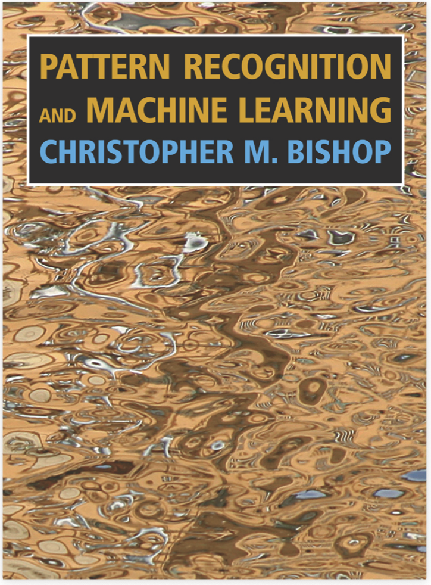
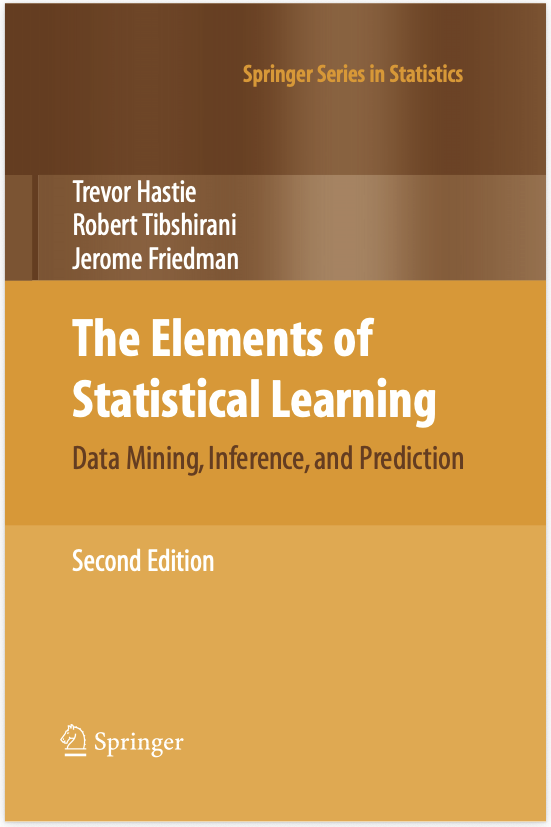
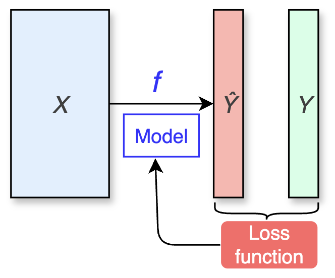
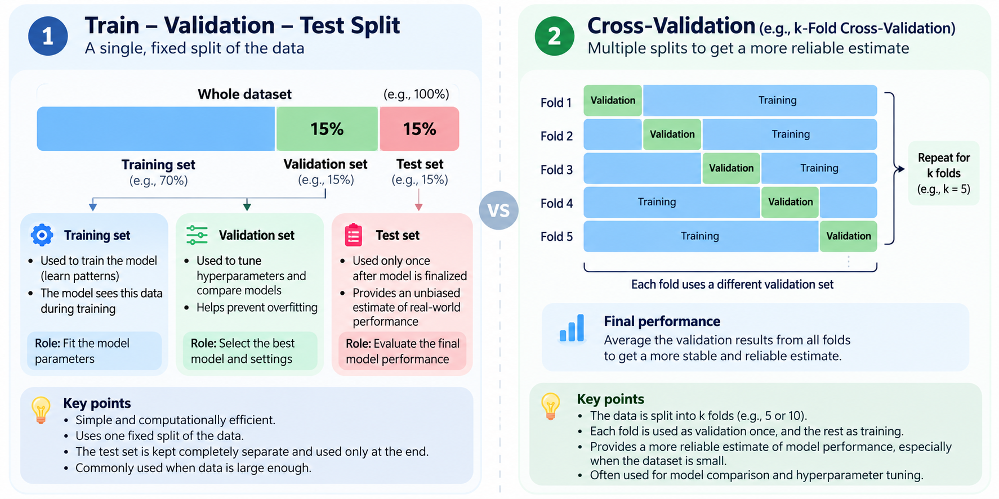
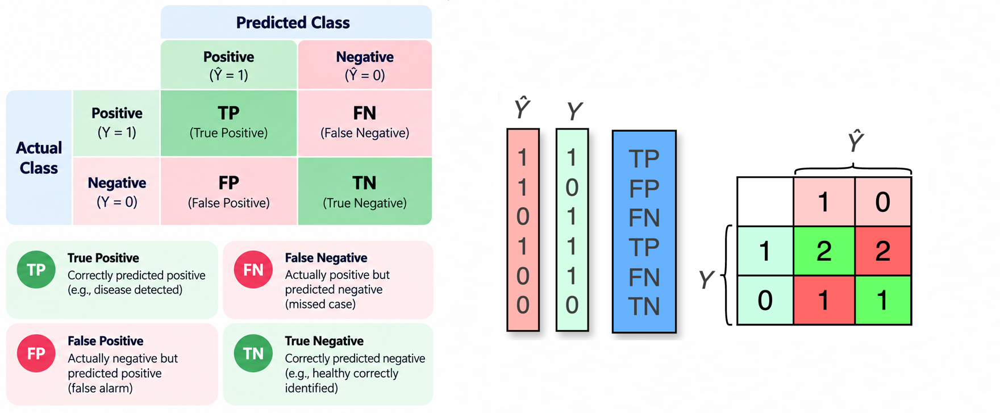
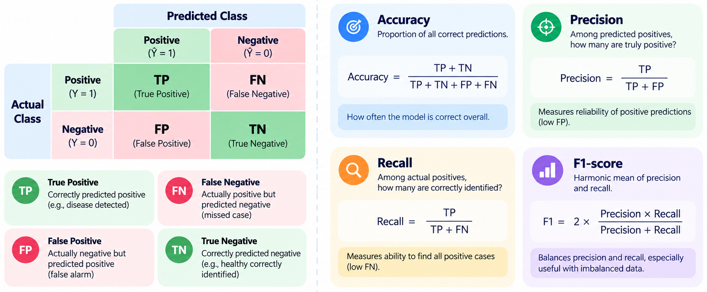
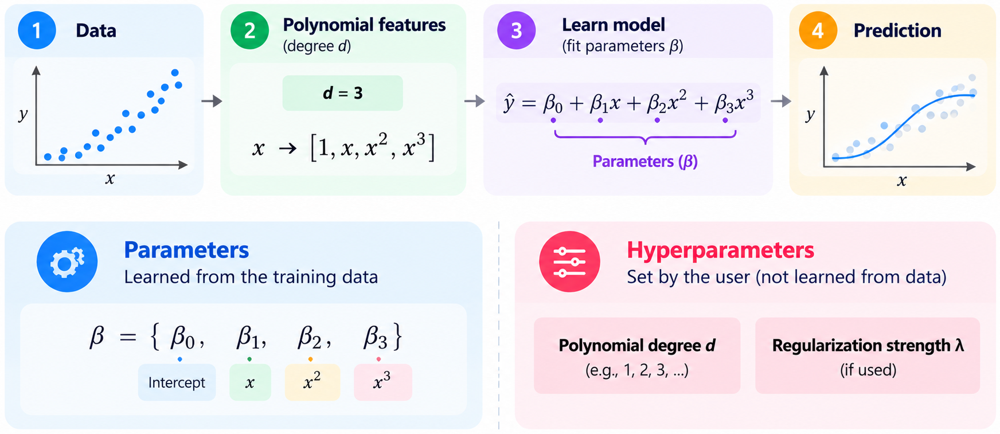
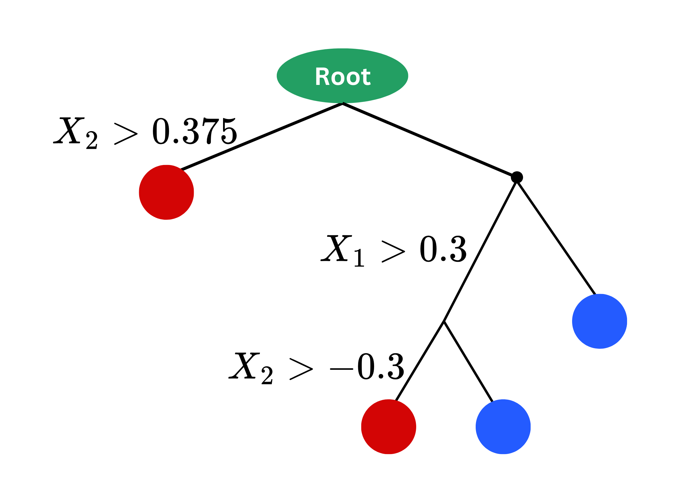

Machine Learning: Decision Trees & kNN
INS-605: Data Analysis II

Lecturer: Dr. Sothea HAS
helpful resources
🌐 Ch 14, Pattern recognition and machine learning, Christopher M. Bishop (2006).

- Great! A bit theoretical but very comprehensive.
- Good for analysts/thinkers.
🌐 Ch 9, The element of statistical learning by T. Hastie, R. Tibshirani & J. Friedman (2008).

- Great one of all times.
- Good for analysts/thinkers.
What You Will Learn
By the end of this section, you should be able to:
- Understand the theoretical motivation of ML models.
- Explain the concept and procedure of
- kNN models
- Decision Tree models.
- Implement these ML models on actual datasets.
- How to fine-tune the models…
1 Introduction
1.1 What’s Machine Learning?
- Machine Learning A field of study that gives computers the ability to learn from data.

- Supervised Learning: Works with labeled data \((X,Y)\), aiming to predict \(Y\) using \(X\).
- Unsupervised Learning: Works with unlabeled data \((X)\), aiming to reduce dimensions, discover patterns or structure in \(X\).
- Reinforcement Learning: Works with agents that learn to make decisions by interacting with an environment, aiming to maximize a reward signal.
Supervised Learning Problems
- In Supervised Learning, we learn to predict the target \(Y\) using \(X\).
- Regression: \(Y\) is a continuous variable.
- Classification: \(Y\) is a categorical variable.
- Choosing a model means selecting a function that maps \(X\) to \(Y\).
- Loss function: quantity that measures the error between the predicted \(\color{red}{\hat{Y}}\) and the actual \(Y\).
- Supervised Learning Objective: search for model \(f\) with smallest
average loss function.

2 Theoretical Motivation
2.1 MSE Optimizer
Regression Function
- In regression, a typical loss is Mean Squared Error (MSE): \[\begin{align*}L(f)&=\mathbb{E}[(Y-f(X))^2]\qquad\ \ (\text{Theory})\\ \widehat{L}(f)&=\frac{1}{n}\sum_{i=1}(y_i-f(\text{x}_i))^2\quad (\text{Practice}).\end{align*}\]
- Regression function (\(\eta\)): The minimizer of MSE, defined by \(\eta(\text{x})=\mathbb{E}[Y|X=\text{x}]\).
- Interpretation: For any input \(\text{x}\in\mathbb{R}^d\), the best target prediction is the average output among samples with inputs similar to \(\text{x}\).
- In practice, \({\color{blue}{\eta}}\) CANNOT be computed directly!
- This result inspires many machine learning models to use the average target value for prediction.
- Example:
Neighbors in input space:
👈 Click a row of X
- Instead, we aim to estimate it. For example, linear regression assumes that \(\eta(\text{x})={\color{blue}{\beta_0}}+\sum_{j=1}^d{\color{blue}{\beta_j}} \text{x}_j\).
- Many estimates \({\color{blue}{\eta}}(x)=\mathbb{E}[Y|X=x]\) using statistical average \(\hat{y}(\text{x})=\frac{1}{K}\sum_{i=1}^K y_i(\text{x})\).
- We will explore some of these ideas!
3 K-Nearest Neighbors (kNN)
3.1 KNN Model
- For \(k\geq 1\), \(k\)NN aims at estimating \({\color{blue}{\eta}}(\text{x})\) by finding the \(k\) closest points to \(\text{x}\) and averaging their \(y\) values.
- It falls under the category of non-parametric models, meaning it does not make assumptions about the form of the function \({\color{blue}{\eta}}(\text{x})\).
- Algorithm:
- Find the \(k\) closest points to \(\text{x}\) (inputs that are most similar to \(\text{x}\)).
- Regression: Prediction is the average \(y_i\) value of these \(k\) points, \[\widehat{y}=\frac{1}{k}\sum_{i=1}^k y_i(\text{x}).\]
- Classification: Predition is the majority class among the \(k\) closest points, \(\widehat{y}=\text{mode}(\{y_i(\text{x})\})\).
3.2 Sensitivity to k
- The choice of they hyperparameter \(k\) is crucial and can significantly impact the model’s performance.
- Too small \(k\) can lead to overfitting while too large \(k\) can lead to underfitting.
- The number of neighbors \(k\) shall be tuned carefully for better generalization to new data.
3.3 Fine Tuning k
- A good \(k\) allows the model to generalize well to new data.
- We need to access the performance of our model on new data.

Psuedo Code for Fine Tuning k
# Pseudo Code for Fine Tuning k:
# ------------------------------
Inputs: Training data, Maximum neighbors M, Number of folds K
Initialize performance list = []
For k = 2 to M:
temp_score = 0
For fold = 1 to K:
Partition data into training_fold and validation_fold
model <- KNN(neighbors = k)
model.fit(training_fold)
score = model.score(validation_fold)
temp_score = temp_score + score
End For
Append (temp_score / K) to performance
End ForWhat to Watch Out Before Training KNN
- Input \(\text{x}\) must be normalized if the features are on different scales.
- Dupplications must be removed from the dataset.
- Categorical features must be encoded.
- Extreme outliers/noises must be removed.
- Features selection/reduction should be performed with large dimension.
Regression metrics
- These are some common metrics in regression problems.
- Mean Squared Error (MSE): \[\text{MSE}=\frac{1}{\text{n}_{\text{val}}}\sum_{i=1}^{\text{n}_{\text{val}}}(\color{blue}{y_i}-\color{red}{\hat{y}_i})^2.\]
- Mean Absolute Error (MAE): \[\text{MAE}=\frac{1}{\text{n}_{\text{val}}}\sum_{i=1}^{\text{n}_{\text{val}}}|\color{blue}{y_i}-\color{red}{\hat{y}_i}|.\]
- Root Mean Squared Error (RMSE): \[\text{RMSE}=\sqrt{\frac{1}{\text{n}_{\text{val}}}\sum_{i=1}^{\text{n}_{\text{val}}}(\color{blue}{y_i}-\color{red}{\hat{y}_i})^2}.\]
- Mean Absolute Percentage Error (MAPE): \[\text{MAPE}=\frac{1}{\text{n}_{\text{val}}}\sum_{i=1}^{\text{n}_{\text{val}}}\left|\frac{\color{blue}{y_i}-\color{red}{\hat{y}_i}}{\color{blue}{y_i}}\right|.\]
- Coefficient of Determination: \(R^2=1-\sum_{i=1}^{\text{n}_{\text{val}}}(\color{blue}{y_i}-\color{red}{\hat{y}_i})^2/\sum_{i=1}^{\text{n}_{\text{val}}}(\color{blue}{y_i}-\overline{\color{blue}{y}})^2.\)
Classification metrics
- These are some common metrics in classification problems.


- According to the problem: \(\displaystyle F_{{\color{red}{\beta}}}=\frac{(1+{\color{red}{\beta}})\text{Precision}\times\text{Recall}}{{\color{red}{\beta}}\text{Precision}+\text{Recall}}, {\color{red}{\beta}}\geq 0\).
Parameters-Loss, Hyperparameters-Metrics
Parameters vs Hyperparameters
- Parameters: The key variables that the model learns from the data directly by minimizing loss function during training. Ex: in linear regression: \(\widehat{y}={\color{blue}{\beta_0}}+\sum_{j=1}^d{\color{blue}{\beta_j}}\text{x}_j\), the parameters are \({\color{blue}{\beta_j}}\).
- Hyperparameters: The variables that has to be set before the training starts. They are not learned directly from the data but fine-tuned using metrics with data-splitting methods such as cross-validation. Ex: in kNN, \(k\) is a hyperparameter.

Application
- Consider Heart Disease Dataset (shpe: \(1025\times 14\)) with \(K=5\).
- \(K\)-NN is a distance-based method, it’s essential to
- Scale the inputs
- Watch out for outliers/missing values
- Encode categorical inputs
- Watch out for the effect of imbalanced class…
Code
import numpy as np
import pandas as pd
data = pd.read_csv(path_heart)
quan_vars = ['age','trestbps','chol','thalach','oldpeak']
qual_vars = ['sex','cp','fbs','restecg','exang','slope','ca','thal','target']
# Convert to correct types
for i in quan_vars:
data[i] = data[i].astype('float')
for i in qual_vars:
data[i] = data[i].astype('category')
# Train test split
from sklearn.model_selection import train_test_split
X, y = data.iloc[:,:-1], data.iloc[:,-1]
X_train, X_test, y_train, y_test = train_test_split(X, y, test_size=0.2, stratify=y, random_state=42)
from sklearn.preprocessing import MinMaxScaler, StandardScaler
scaler = MinMaxScaler()
# OnehotEncoding and Scaling
X_train_cat = pd.get_dummies(X_train.select_dtypes(include="category"), drop_first=True)
X_train_encoded = scaler.fit_transform(np.column_stack([X_train.select_dtypes(include="number").to_numpy(), X_train_cat]))
X_test_cat = pd.get_dummies(X_test.select_dtypes(include="category"), drop_first=True)
X_test_encoded = scaler.transform(np.column_stack([X_test.select_dtypes(include="number").to_numpy(), X_test_cat]))
# KNN
from sklearn.neighbors import KNeighborsClassifier
knn = KNeighborsClassifier(n_neighbors=5)
knn = knn.fit(X_train_encoded, y_train)
y_pred = knn.predict(X_test_encoded)
from sklearn.metrics import roc_auc_score, accuracy_score, precision_score, recall_score, f1_score, confusion_matrix, ConfusionMatrixDisplay
test_perf = pd.DataFrame(
data={'Accuracy': accuracy_score(y_test, y_pred),
'Precision': precision_score(y_test, y_pred),
'Recall': recall_score(y_test, y_pred),
'F1-score': f1_score(y_test, y_pred)},
columns=["Accuracy", "Precision", "Recall", "F1-score"],
index=["5NN"])
test_perf| Accuracy | Precision | Recall | F1-score | |
|---|---|---|---|---|
| 5NN | 0.868293 | 0.861111 | 0.885714 | 0.873239 |
- Q3: Can we do better?
- A3: Yes! \(K=5\) is arbitrary. We should fine-tune it!
Fine-tuning k: Cross-validation
- There are many way to perform Cross-validation in
python. - Let’s use
GridSearchCVfromsklearn.model_selectionmodule.
Code
knn = KNeighborsClassifier()
from sklearn.model_selection import GridSearchCV
from sklearn.metrics import f1_score, make_scorer
scorer = make_scorer(f1_score, pos_label=1)
param_grid = {'n_neighbors': list(range(1,21))}
knn = KNeighborsClassifier()
grid_search = GridSearchCV(
knn, param_grid, cv=10,
scoring=scorer,
n_jobs=-1,
return_train_score=True)
grid_search.fit(X_train_encoded, y_train)
knn = KNeighborsClassifier(n_neighbors=grid_search.best_params_['n_neighbors'])
knn = knn.fit(X_train_encoded, y_train)
y_pred = knn.predict(X_test_encoded)
test_perf = pd.concat([test_perf, pd.DataFrame(
data={'Accuracy': accuracy_score(y_test, y_pred),
'Precision': precision_score(y_test, y_pred),
'Recall': recall_score(y_test, y_pred),
'F1-score': f1_score(y_test, y_pred)},
columns=["Accuracy", "Precision", "Recall", "F1-score"],
index=[f"{grid_search.best_params_['n_neighbors']}NN"])], axis=0)
test_perf| Accuracy | Precision | Recall | F1-score | |
|---|---|---|---|---|
| 5NN | 0.868293 | 0.861111 | 0.885714 | 0.873239 |
| 1NN | 1.000000 | 1.000000 | 1.000000 | 1.000000 |
What can go wrong?
- It’s because of the duplicated data!
- Let’s try again.
| Accuracy | Precision | Recall | F1-score | |
|---|---|---|---|---|
| 5NN | 0.868293 | 0.861111 | 0.885714 | 0.873239 |
| 1NN | 1.000000 | 1.000000 | 1.000000 | 1.000000 |
| 16NN_No_Dup | 0.885246 | 0.882353 | 0.909091 | 0.895522 |
Curse of dimensionality
- Curse of dimensionality refers to various challenges and phenomena that arise when working with high-dimensional data.
- The main challenge for \(K\)-NN is that distances or closeness lose its meaning in high-dimensional spaces.
- In this scenario, data points tend to be equally distant from one another.
- Example: \(\text{x}_1,\dots,\text{x}_n\sim{\cal U}[-5,5]^d\) with \(d=1,10,100,500,1000, 5000, 10000, 50000\).
- For each dimension \(d\), we compute: \[r(d)=\frac{\max_{i\neq j}D(\text{x}_i,\text{x}_j)}{\min_{i\neq j}D(\text{x}_i,\text{x}_j)}.\]
- Obtain the following graph 👉
Code
N = 10
Ds = np.zeros(shape=(N*(N-1)//2, 8))
j = 0
for d in [1,10,100, 500, 1000, 5000, 10000, 50000]:
Xd = np.random.uniform(-5,5,size=(N,d))
i = 0
for s in range(1, N):
for k in range(s):
Ds[i,j] = np.linalg.norm(Xd[s,:] - Xd[k,:])
i += 1
j += 1
import plotly.express as px
df_dist = pd.DataFrame({'Ratio': np.round(Ds.max(axis=0)/Ds.min(axis=0), 2), 'Dim': ['1','10','100', '500', '1000', '5000', '10000', '50000']})
fig4 = px.line(df_dist, x='Dim', y="Ratio", text="Ratio")
fig4.update_layout(
width=300, height=480,
title="Max-min distance ratio at various dimension")
fig4.update_xaxes(title='Dimension')
fig4.update_yaxes(title='Max-Min Distance Ratio')
fig4.update_traces(textposition="top right")
fig4.show()Summary
- \(k\)-NN predicts the label/value of a new point by looking at the \(k\) closest neighbors of the point.
- Data preprocessing is essential: scaling, encoding, outliers…
- The key parameter \(k\) can be tuned using cross-validation technique.
- \(k\)-NN may not be suitable in high-dimensional cases due to Curse of dimensionality. We can try the following:
- Feature selection (EDA skills)
- Dimensional reduction (coming up)
- Distance metric (maths…)
4 Decision Trees
4.1 Motivation
- kNN defines
Neighborsbased on a distance between two points. - The main question:
Is there other way to define Neighbor?

| x1 | x2 | y |
|---|---|---|
| -0.752759 | 2.704286 | 1 |
| 1.935603 | -0.838856 | 0 |
| -0.546282 | -1.960234 | 0 |
| 0.952162 | -2.022393 | 0 |
| -0.955179 | 2.584544 | 1 |
| -2.458261 | 2.011815 | 1 |
| 2.449595 | -1.562629 | 0 |
| 1.065386 | -2.900473 | 0 |
| -0.793301 | 0.793835 | 1 |
| 2.015881 | 1.175845 | 0 |
| -0.016509 | -1.194730 | 0 |
CART: Classification And Regression Trees
- In CART, “neighbors” are defined by rectangular regions within inputs space.
- Neighbors in \(k\)-NN are based on straight distance.
- Neighbors in CART are based on blocks.
CART (cont.)
- Building a CART consists of:
- Start at root (no split yet).
- Recursively split into smaller regions.
- Stop at some stopping criterion.
- Regions \(\color{blue}{\Rightarrow}\) neighbors \(\color{blue}{\Rightarrow}\) prediction.
- At each split, we try column \(\color{red}{X_j}\) at threshold \(\color{red}{a}\in\mathbb{R}\) creating two subregions \(R_1\) and \(R_2\).
- We decide to split along \(\color{red}{X_{j_0}}\) at \(\color{red}{a_0}\) so that \(R_1\) and \(R_2\) are as pure as possible.
- Impurity measures:
- Regression: Within-region variation \(\sum_{y\in R_1}(y-\overline{y}_1)^2+\sum_{y\in R_2}(y-\overline{y}_2)^2.\)
- Classification (\(M\) classes):
- Misclas. error \(=1-\hat{p}_{k^*}\) where \(k^*\) is the majority class.
- Gini impurity \(=\sum_{k=1}^M\hat{p}_{k}(1-\hat{p}_{k})\).
- Entropy \(=-\sum_{k}\hat{p}_{k}\log(\hat{p}_{k})\).
CART (cont.)
- Building a CART consists of:
- Start at root (no split yet).
- Recursively split into smaller regions.
- Stop at some stopping criterion.
- Regions \(\color{blue}{\Rightarrow}\) neighbors \(\color{blue}{\Rightarrow}\) prediction.
- At each split, we try column \(\color{red}{X_j}\) at threshold \(\color{red}{a}\in\mathbb{R}\) creating two subregions \(R_1\) and \(R_2\).
- We decide to split along \(\color{red}{X_{j_0}}\) at \(\color{red}{a_0}\) so that \(R_1\) and \(R_2\) are as pure as possible.
- Impurity measures:
CART (cont.)
- At the 1st split, we compute IM (enptropy):
- 1st region: \(\text{En}(R_1)=-1\log(1)=0\).
- \(\begin{align*}\text{En}(R_2)&=-\color{blue}{16/19\log(16/19)}-\color{red}{3/19\log(3/19)}\\ &=0.436.\end{align*}\)
- \(\text{En}_1=(0)11/30+(0.436)19/30=0.276.\)
- Information gain: \(\text{En}_0-\text{En}_1.\)
- When any feature is used to split the data, this gain is counted as its usefulness.

- Prediction rule:
- Regression: \(\color{blue}{\hat{y}}=\) average targets within the same block.
- Classification: \(\color{blue}{\hat{y}}=\) majority vote among points within the same block.
Hyperparameters of CART and Influence
Hyperparameters:max_depthmax_featuresmin_samples_splitmin_samples_leafcriterion… [see explanation here]
- Deep trees \(\Rightarrow\) Overfitting.
- In this case of smaller leaves, it’s similar to smaller \(k\) in \(k\)-NN.
- These hyperparameters should be fine-tuned using CV to optimize its performance.
Application: Heart Disease Dataset
- We drop duplicated data and use
GridsearchCVwith \(K=10\) to search over the hyperparameters:- Impurity (
criterion) - Mininum size of leave nodes (
min_samples_leaf) - Maximum features (
max_features).
- Impurity (
Code
data = pd.read_csv(path_heart)
quan_vars = ['age','trestbps','chol','thalach','oldpeak']
qual_vars = ['sex','cp','fbs','restecg','exang','slope','ca','thal','target']
# Convert to correct types
for i in quan_vars:
data[i] = data[i].astype('float')
for i in qual_vars:
data[i] = data[i].astype('category')
# Train test split
from sklearn.model_selection import train_test_split
data_no_dup = data.drop_duplicates()
X, y = data_no_dup.iloc[:,:-1], data_no_dup.iloc[:,-1]
X_train, X_test, y_train, y_test = train_test_split(X, y, test_size=0.2, stratify=y, random_state=42)
from sklearn.model_selection import GridSearchCV
from sklearn.tree import DecisionTreeClassifier
from sklearn.metrics import accuracy_score
from sklearn.metrics import roc_auc_score, accuracy_score, precision_score, recall_score, f1_score, confusion_matrix, ConfusionMatrixDisplay
clf = DecisionTreeClassifier()
param_grid = {'criterion': ['gini', 'entropy'],
'min_samples_leaf': [2, 5, 10, 16, 20, 25, 30],
'max_features': ['auto', 'sqrt', 'log2', 2, 5, 10, X_train.shape[1]] }
grid_search = GridSearchCV(
estimator=clf, param_grid=param_grid,
cv=10, scoring='accuracy', n_jobs=-1)
grid_search.fit(X_train, y_train)
best_model = grid_search.best_estimator_
y_pred = best_model.predict(X_test)
test_tr = pd.DataFrame(
data={'Accuracy': accuracy_score(y_test, y_pred),
'Precision': precision_score(y_test, y_pred),
'Recall': recall_score(y_test, y_pred),
'F1-score': f1_score(y_test, y_pred)},
columns=["Accuracy", "Precision", "Recall", "F1-score"],
index=["Tree"])
test_tr = pd.concat([test_tr, pd.DataFrame(
data={'Accuracy': 0.885246,
'Precision': 0.882353,
'Recall': 0.909091,
'F1-score': 0.909091},
columns=["Accuracy", "Precision", "Recall", "F1-score"],
index=["16-NN"])], axis=0)
print(f"Best hyperparameters: {grid_search.best_params_}")
test_trBest hyperparameters: {'criterion': 'gini', 'max_features': 10, 'min_samples_leaf': 5}| Accuracy | Precision | Recall | F1-score | |
|---|---|---|---|---|
| Tree | 0.737705 | 0.742857 | 0.787879 | 0.764706 |
| 16-NN | 0.885246 | 0.882353 | 0.909091 | 0.909091 |
Summary
- CART is a nonparametric model that define neighbors based on small rectangular regions.
- They are not sensitive to scaling.
- The key parameters includes
- depth, minimum leave size,
- IMs, num. of splits,
- max features at each split…
- They should be fine-tuned to optimize the model performance.
- Just ike \(K\)-NN with small \(K\), deep trees are prone to overfitting.
- It’s the building block of strong ensemble models like Random Forests and Gradient Boosting Machines.
🥳 Yeahhhh 🥂!!!
Let’s take a break!